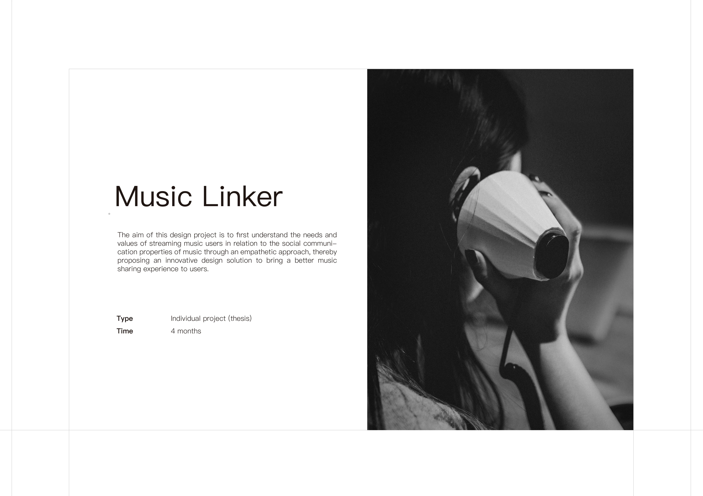
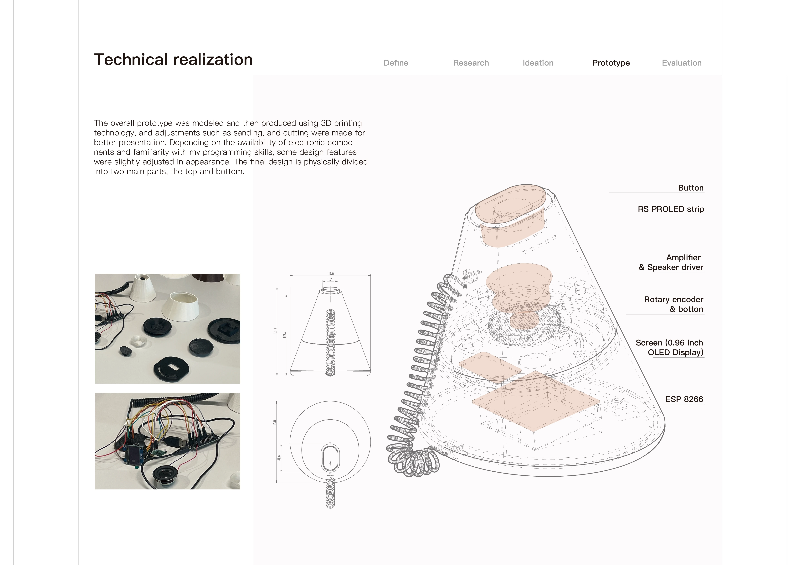
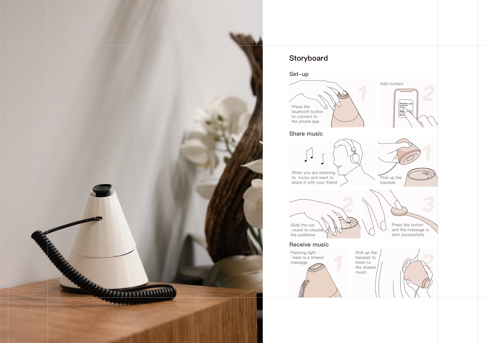
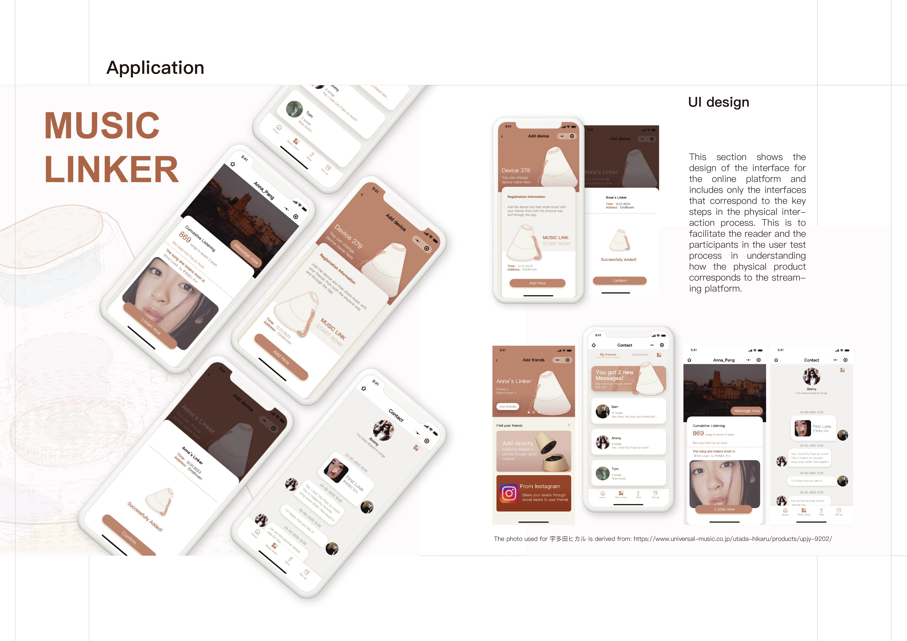

Music Linker
The aim of this design project is to first understand the needs and values of streaming music users in relation to the social communication properties of music through an empathetic approach, thereby proposing an innovative design solution to bring a better music sharing experience to users.





